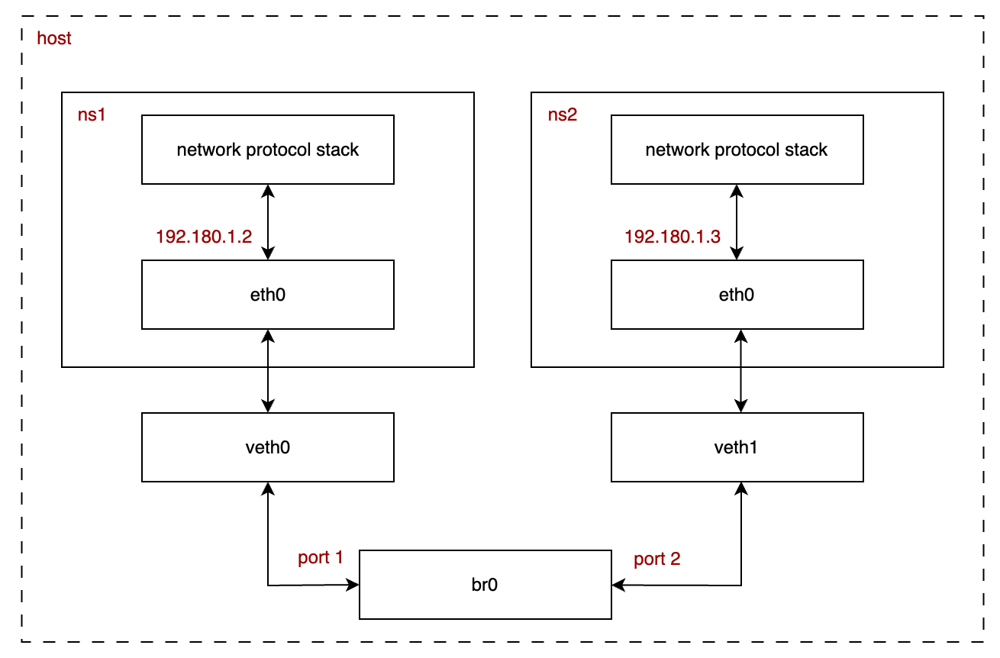

Networking (5) Docker network - bridge driver
Tiếp tục chuỗi bài viết tìm hiểu về virtual netowrk interface, trái ngược với những bài viết trước hơi mang tính lí thuyết, bài viết hôm nay sẽ có tính ứng dụng hơn, đó là cách docker sử dụng virtual ethernet và virtual bridge để hiện thực một phần hệ thống network.
Dựa theo tài liệu của Docker, bridge là diver mặc định của docker network, bridge driver cho phép các container chạy trên cùng 1 máy vật lý giao tiếp với nhau, đối với các container chạy trên các máy vật lý khác nhau, chúng ta cần sử dụng các driver network khác như host, NAT, overlay (e.g VxLAN),...
Overview
Các container chạy trong các namespace khác nhau với sự độc lập về tài nguyên, network, hình dưới mô tả cách docker sử dụng bridge driver.

bridge driver cho phép các container trong cùng 1 bridge giao tiếp với nhau, có 2 thành phần trong mô hình này:
veth pair: giao tiếp giữa máy chủ và namespacebridge: giao tiếp giữa cácveth
Các gói tin sẽ đi từ trong namespace ra máy chủ, qua bridge rồi đi vào namespace còn lại, bridge đóng vai trò như 1 gateway và điều chuyển các gói tin ethernet.
Ví dụ
Mình sẽ chạy thử một ví dụ và capture gói tin bằng tcpdump để chứng minh flow ở trên.
Đầu tiên, tạo mới 1 network với driver bridge có tên bridge_example và kiểm tra bằng lệnh docker network ls
docker network create \
--driver bridge \
--subnet 192.180.1.0/24 \
--gateway 192.180.1.1 \
bridge_example
# verify
docker network ls
NETWORK ID NAME DRIVER SCOPE
8e2893b1f2cc bridge_example bridge local
Tiếp tục chạy 2 container và sử dụng driver vừa mới tạo.
docker run -t -d --privileged \
--network bridge_example \
--name c-test-1 ubuntu
docker run -t -d --privileged \
--network bridge_example \
--name c-test-2 ubuntu
# verify
docker container ps
docker network inspect bridge_example
Kết quả khi kiểm tra bridge bridge_example (mình đã lược bỏ bớt những phần không cần thiết)
[
{
"Name": "bridge_example",
"IPAM": {
"Driver": "default",
"Options": {},
"Config": [
{
"Subnet": "192.180.1.0/24",
"Gateway": "192.180.1.1"
}
]
},
"Containers": {
"784ce52efd837b214ade8f5b124c42e94a87f71230028fa7365251853d19fc67": {
"Name": "c-test-2",
"EndpointID": "92aab0450cdba799d9a6a11f464f7d4a7e625d41b9b55c8be2d63b215db6f271",
"MacAddress": "02:42:c0:b4:01:03",
"IPv4Address": "192.180.1.3/24",
"IPv6Address": ""
},
"fb8ec7decde7d57937d16d4da20ec00c36ca938af8896b599c6d5e942008e1dc": {
"Name": "c-test-1",
"EndpointID": "3de362f05f3e6c29898a726a8116191fb38a9609dd53a6f473a59bda1b6a940b",
"MacAddress": "02:42:c0:b4:01:02",
"IPv4Address": "192.180.1.2/24",
"IPv6Address": ""
}
}
}
]
Kết quả cho thấy 2 containers đang sử dụng bridge bridge_example.
Ở máy chủ, kiểm tra các virtual network interface bằng lệnh ifconfig
br-8e2893b1f2cc Link encap:Ethernet HWaddr 02:42:11:82:AD:98
inet addr:192.180.1.1 Bcast:192.180.1.255 Mask:255.255.255.0
inet6 addr: fe80::42:11ff:fe82:ad98/64 Scope:Link
UP BROADCAST RUNNING MULTICAST MTU:1500 Metric:1
RX packets:7997 errors:0 dropped:0 overruns:0 frame:0
TX packets:9651 errors:0 dropped:0 overruns:0 carrier:0
collisions:0 txqueuelen:0
RX bytes:420682 (410.8 KiB) TX bytes:26921283 (25.6 MiB)
docker0 Link encap:Ethernet HWaddr 02:42:9E:E4:B1:D5
inet addr:172.17.0.1 Bcast:172.17.255.255 Mask:255.255.0.0
inet6 addr: fe80::42:9eff:fee4:b1d5/64 Scope:Link
UP BROADCAST RUNNING MULTICAST MTU:1500 Metric:1
RX packets:119202 errors:0 dropped:0 overruns:0 frame:0
TX packets:159094 errors:0 dropped:0 overruns:0 carrier:0
collisions:0 txqueuelen:0
RX bytes:6285502 (5.9 MiB) TX bytes:322699596 (307.7 MiB)
eth0 Link encap:Ethernet HWaddr D6:A6:FD:A7:05:37
inet addr:192.168.65.4 Bcast:0.0.0.0 Mask:255.255.255.255
inet6 addr: fe80::d4a6:fdff:fea7:537/64 Scope:Link
UP BROADCAST RUNNING MULTICAST MTU:1500 Metric:1
RX packets:171798 errors:0 dropped:0 overruns:0 frame:0
TX packets:129430 errors:0 dropped:0 overruns:0 carrier:0
collisions:0 txqueuelen:0
RX bytes:356622698 (340.1 MiB) TX bytes:8690969 (8.2 MiB)
lo Link encap:Local Loopback
inet addr:127.0.0.1 Mask:255.0.0.0
inet6 addr: ::1/128 Scope:Host
UP LOOPBACK RUNNING MTU:65536 Metric:1
RX packets:60 errors:0 dropped:0 overruns:0 frame:0
TX packets:60 errors:0 dropped:0 overruns:0 carrier:0
collisions:0 txqueuelen:1000
RX bytes:5156 (5.0 KiB) TX bytes:5156 (5.0 KiB)
veth24d52fa Link encap:Ethernet HWaddr C2:9A:A8:9E:3B:2D
inet6 addr: fe80::c09a:a8ff:fe9e:3b2d/64 Scope:Link
UP BROADCAST RUNNING MULTICAST MTU:1500 Metric:1
RX packets:42 errors:0 dropped:0 overruns:0 frame:0
TX packets:58 errors:0 dropped:0 overruns:0 carrier:0
collisions:0 txqueuelen:0
RX bytes:3108 (3.0 KiB) TX bytes:4296 (4.1 KiB)
veth98a7f28 Link encap:Ethernet HWaddr 82:B2:D9:7D:4C:55
inet6 addr: fe80::80b2:d9ff:fe7d:4c55/64 Scope:Link
UP BROADCAST RUNNING MULTICAST MTU:1500 Metric:1
RX packets:8018 errors:0 dropped:0 overruns:0 frame:0
TX packets:9712 errors:0 dropped:0 overruns:0 carrier:0
collisions:0 txqueuelen:0
RX bytes:534194 (521.6 KiB) TX bytes:26925817 (25.6 MiB)
Có 3 interface liên quan đến bridge driver và 2 containers, đó là br-8e2893b1f2cc, veth24d52fa và veth98a7f28, các gói tin sẽ đi qua các interface này.
Mọi thứ đã được chuẩn bị xong, mình sẽ sử dụng lệnh ping để kiểm tra sự giao tiếp giữa 2 container này. Nếu container không có lệnh ping, bạn có thể cài đặt bằng lệnh:
apt-get update -y & apt-get install -y iputils-ping
Ở container c-test-1, chạy lệnh:
ping -c 2 192.180.1.3
# result
PING 192.180.1.3 (192.180.1.3) 56(84) bytes of data.
64 bytes from 192.180.1.3: icmp_seq=1 ttl=64 time=0.569 ms
64 bytes from 192.180.1.3: icmp_seq=2 ttl=64 time=0.144 ms
--- 192.180.1.3 ping statistics ---
2 packets transmitted, 2 received, 0% packet loss, time 1024ms
rtt min/avg/max/mdev = 0.144/0.356/0.569/0.212 ms
Kết quả cho thấy 2 container có thể giao tiếp được với nhau, sử dụng tcpdump ở máy chủ để kiểm tra dòng của gói tin:
tcpdump -n -i any
# result
tcpdump: data link type LINUX_SLL2
tcpdump: verbose output suppressed, use -v[v]... for full protocol decode
listening on any, link-type LINUX_SLL2 (Linux cooked v2), snapshot length 262144 bytes
10:32:50.205517 veth98a7f28 P IP 192.180.1.2 > 192.180.1.3: ICMP echo request, id 132, seq 1, length 64
10:32:50.205822 veth24d52fa Out IP 192.180.1.2 > 192.180.1.3: ICMP echo request, id 132, seq 1, length 64
10:32:50.206052 veth24d52fa P IP 192.180.1.3 > 192.180.1.2: ICMP echo reply, id 132, seq 1, length 64
10:32:50.206067 veth98a7f28 Out IP 192.180.1.3 > 192.180.1.2: ICMP echo reply, id 132, seq 1, length 64
10:32:51.208395 veth98a7f28 P IP 192.180.1.2 > 192.180.1.3: ICMP echo request, id 132, seq 2, length 64
10:32:51.208470 veth24d52fa Out IP 192.180.1.2 > 192.180.1.3: ICMP echo request, id 132, seq 2, length 64
10:32:51.208587 veth24d52fa P IP 192.180.1.3 > 192.180.1.2: ICMP echo reply, id 132, seq 2, length 64
10:32:51.208607 veth98a7f28 Out IP 192.180.1.3 > 192.180.1.2: ICMP echo reply, id 132, seq 2, length 64
tcpdunp -n -i br-8e2893b1f2cc
# result
tcpdump: verbose output suppressed, use -v[v]... for full protocol decode
listening on br-8e2893b1f2cc, link-type EN10MB (Ethernet), snapshot length 262144 bytes
10:35:06.201625 IP 192.180.1.2 > 192.180.1.3: ICMP echo request, id 133, seq 1, length 64
10:35:06.201887 IP 192.180.1.3 > 192.180.1.2: ICMP echo reply, id 133, seq 1, length 64
10:35:07.205823 IP 192.180.1.2 > 192.180.1.3: ICMP echo request, id 133, seq 2, length 64
10:35:07.205959 IP 192.180.1.3 > 192.180.1.2: ICMP echo reply, id 133, seq 2, length 64
Ở đây mình phải sử dụng câu lệnh thứ 2 để bắt gói tin trên bridge bởi vì lệnh tcpdump -n -i any sẽ không bắt được những gói tin trên các interface mà địa chỉ đích trên gói tin không phải là nó (tham khảo: tcpdump-any).
Các gói tin ICMP request đi từ veth veth98a7f28 đến bridge br-8e2893b1f2cc rồi vào veth veth24d52fa, các gói tin ICMP reply sẽ có hướng ngược lại.
Tiếp theo, kiểm tra mối liên hệ giữa bridge và 2 veth bằng lệnh brctl show và brctl showmacs br-8e2893b1f2cc
brctl show
# result
bridge name bridge id STP enabled interfaces
br-8e2893b1f2cc 8000.02421182ad98 no veth98a7f28
veth24d52fa
brctl showmacs br-8e2893b1f2cc
#result
port no mac addr is local? ageing timer
1 82:b2:d9:7d:4c:55 yes 0.00
1 82:b2:d9:7d:4c:55 yes 0.00
2 c2:9a:a8:9e:3b:2d yes 0.00
2 c2:9a:a8:9e:3b:2d yes 0.00
Nếu sử dụng địa chỉ MAC từ kết quả ở trên để kiểm tra lại với lệnh ifconfig, bạn sẽ thấy 2 địa chỉ MAC sẽ ứng với 2 veth, như vậy lúc này bridge sẽ có vai trò như 1 switch và điều chuyển gói tin ethernet dựa trên địa chỉ MAC.
Tổng kết
Thông qua bài viết này, mình đã phân tích cách docker sử dụng driver bridge và kiểm chứng bằng các công cụ network như tcpdump, ifconfig, ping,...
Trong xu hướng công nghệ hiện nay, docker có thể được xem là 1 phần không thể thiếu trong công việc hàng ngày của mỗi lập trình viên, việc hiểu sâu hơn cách docker hoạt động cũng giúp mình nâng cao chất lượng công việc, giảm thời gian debug khi có lỗi xảy ra.